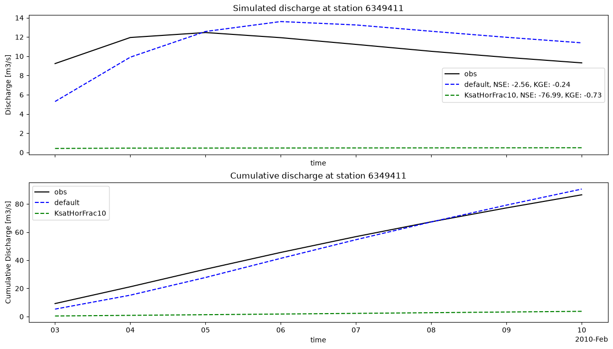
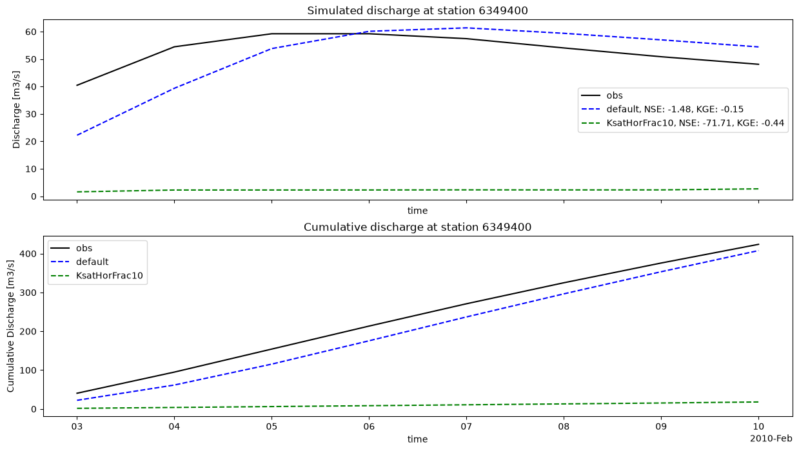
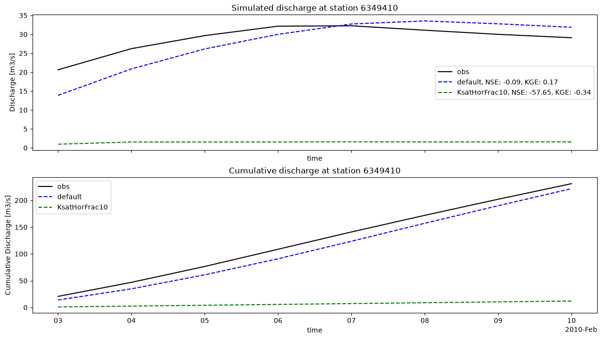

Tip
Plot Wflow outputs#
HydroMT provides a simple interface to model outputs from which we can make beautiful plots:
Wflow gridded outputs are saved to the model
output_gridcomponent as axarray.Dataset.Wflow netcdf scalar outputs are saved to the model
output_scalarcomponent as axarray.Dataset.Wflow csv outputs are saved to the model
output_csvcomponent as a dict ofxarray.DataArray.
These plots can be useful to analyze the model outputs or also compare model runs with different settings (different precipitation source or different parameters values).
Load dependencies#
[1]:
import matplotlib.pyplot as plt
import hydromt
from hydromt_wflow import WflowSbmModel
Read the model run(s) outputs#
The wflow_piave_subbasin model was run using the default global data sources of the hydromt_wflow plugin. The different variables to save were set in a separate wflow configuration file: wflow_sbm_results.toml.
A second run of the model was also done, where the KsatHorFrac parameter of wflow was set to 10 (instead of the default 100 value) using an alternative configuration file: wflow_sbm_results2.toml.
We will use the below runs dictionnary to define the model run(s) we want to read and some settings for plotting. If you want to plot and compare several runs together, you can simply add them to the runs dictionnary.
[2]:
# Dictionary listing the different wflow models and runs to compare, including plotting options
runs = {
"run1": {
"longname": "default",
"color": "blue",
"root": "wflow_piave_subbasin",
"config_fn": "wflow_sbm_results.toml",
},
"run2": {
"longname": "KsatHorFrac10",
"color": "green",
"root": "wflow_piave_subbasin",
"config_fn": "wflow_sbm_results2.toml",
},
}
mainrun = "run1"
[3]:
# Initialize the different model run(s)
for r in runs:
run = runs[r]
model = WflowSbmModel(root=run["root"], mode="r+", config_filename=run["config_fn"])
runs[r].update({"model": model})
Wflow can save different types of outputs (netcdf gridded output, netcdf scalar netcdf, csv scalar timeseries) that are also reflected in the organisation of the HydroMT-Wflow different output components:
a “output_grid” hydromt.RasterDataset for the gridded netcdf file (output.netcdf_grid section of the TOML)
a “output_scalar” xarray.Dataset for the netcdf point timeseries file (output.netcdf_scalar section of the TOML)
different hydromt.GeoDataArrays for the csv file , one per column (output.csv section and csv.column sections of the TOML). The xy coordinates are the coordinates of the station or of the representative point of the subcatch/area. The variable name in the GeoDataArray corresponds to the csv header attribute or header_map when available.
Below you can see how to access to the different outputs of run1 and its contents:
[4]:
model1 = runs["run1"]["model"]
model1.output_grid.data
[4]:
<xarray.Dataset> Size: 198kB
Dimensions: (longitude: 58, latitude: 53, layer: 4, time: 8)
Coordinates:
* longitude (longitude) float64 464B 11.78 11.8 11.82 ... 12.7 12.72 12.73
* latitude (latitude) float64 424B 46.68 46.67 46.65 ... 45.85 45.83 45.82
* layer (layer) float64 32B 1.0 2.0 3.0 4.0
* time (time) datetime64[ns] 64B 2010-02-03 2010-02-04 ... 2010-02-10
spatial_ref int64 8B 0
Data variables:
q_river (time, latitude, longitude) float32 98kB dask.array<chunksize=(8, 53, 58), meta=np.ndarray>
h_land (time, latitude, longitude) float32 98kB dask.array<chunksize=(8, 53, 58), meta=np.ndarray>[5]:
model1.output_scalar.data
[5]:
<xarray.Dataset> Size: 212B
Dimensions: (time: 8, Q_gauges: 1, temp_bycoord: 1, layer: 4)
Coordinates:
* time (time) datetime64[ns] 64B 2010-02-03 2010-02-04 ... 2010-02-10
* Q_gauges (Q_gauges) <U1 4B '1'
* temp_bycoord (temp_bycoord) <U12 48B 'temp_bycoord'
* layer (layer) float64 32B 1.0 2.0 3.0 4.0
Data variables:
Q (time, Q_gauges) float32 32B dask.array<chunksize=(8, 1), meta=np.ndarray>
temp_coord (time, temp_bycoord) float32 32B dask.array<chunksize=(8, 1), meta=np.ndarray>[6]:
model1.output_csv.data
[6]:
{'river_max_q': <xarray.DataArray 'river_max_q' (time: 8, index: 1)> Size: 64B
array([[ 61.6663363 ],
[191.64011325],
[256.87083398],
[306.5213507 ],
[334.57125134],
[339.60779915],
[330.20381016],
[320.04396644]])
Coordinates:
* time (time) datetime64[ns] 64B 2010-02-03 2010-02-04 ... 2010-02-10
* index (index) int64 8B 0
x (index) float64 8B 12.26
y (index) float64 8B 46.25,
'reservoir_volume': <xarray.DataArray 'reservoir_volume' (time: 8, index: 1)> Size: 64B
array([[42800000.],
[42800000.],
[42800000.],
[42800000.],
[42800000.],
[42800000.],
[42800000.],
[42800000.]])
Coordinates:
* time (time) datetime64[ns] 64B 2010-02-03 2010-02-04 ... 2010-02-10
* index (index) int64 8B 0
x (index) float64 8B 12.08
y (index) float64 8B 46.17,
'temp_bycoord': <xarray.DataArray 'temp_bycoord' (time: 8, index: 1)> Size: 64B
array([[0.81 ],
[1.96000004],
[2.93000007],
[4.55000019],
[6.96999979],
[5.76000023],
[2.75999999],
[2.07999992]])
Coordinates:
* time (time) datetime64[ns] 64B 2010-02-03 2010-02-04 ... 2010-02-10
* index (index) int64 8B 0
x (index) float64 8B 11.95
y (index) float64 8B 45.9,
'temp_byindex': <xarray.DataArray 'temp_byindex' (time: 8, index: 1)> Size: 64B
array([[0.81 ],
[1.96000004],
[2.93000007],
[4.55000019],
[6.96999979],
[5.76000023],
[2.75999999],
[2.07999992]])
Coordinates:
* time (time) datetime64[ns] 64B 2010-02-03 2010-02-04 ... 2010-02-10
* index (index) int64 8B 0
x (index) float64 8B 11.95
y (index) float64 8B 45.9,
'river_q_gauges_grdc': <xarray.DataArray 'river_q_gauges_grdc' (index: 3, time: 8)> Size: 192B
array([[ 5.29637633, 9.90236777, 12.57504578, 13.60631102, 13.25210828,
12.59654324, 11.97039744, 11.39443727],
[22.22694759, 39.35561132, 53.81891013, 60.11554945, 61.37345908,
59.38318599, 57.00282682, 54.42747911],
[13.88852474, 20.86273239, 26.14913717, 29.99760895, 32.73448856,
33.54202538, 32.78419281, 31.86943311]])
Coordinates:
* index (index) int32 12B 6349411 6349400 6349410
geometry (index) object 24B POINT (12.116666666666681 46.599999999999...
value (index) float64 24B 6.349e+06 6.349e+06 6.349e+06
* time (time) datetime64[ns] 64B 2010-02-03 2010-02-04 ... 2010-02-10
spatial_ref int64 8B 0,
'precip_subbasin_location__count': <xarray.DataArray 'precip_subbasin_location__count' (index: 1, time: 8)> Size: 64B
array([[ 0.14586207, 0.08958863, 0.02066546, 13.49697511, 6.09398678,
2.09334551, 0.06219601, 0.38021174]])
Coordinates:
* index (index) int32 4B 1
geometry (index) object 8B POINT (12.175000000000015 46.24999999999999)
value (index) float64 8B 1.0
* time (time) datetime64[ns] 64B 2010-02-03 2010-02-04 ... 2010-02-10
spatial_ref int64 8B 0}
Read observations#
You can also use HydroMT to read observations data in order to analyze your model results. Here a fictional observations timeseries was prepared for the gauges_grdc locations.
[7]:
# Discharge data
timeseries_fn = "gauges_observed_flow.csv" # observed discharge timeseries
name = "gauges_grdc" # gauges locations in staticgeoms
stationID = "grdc_no" # column name in staticgeoms containing the stations IDs
# Read the observations data
# read timeseries data and match with existing gdf
gdf = runs[mainrun]["model"].geoms.get(name)
gdf.index = gdf[stationID]
da_ts = hydromt.readers.open_timeseries_from_table(timeseries_fn, name=name, sep=";")
da = hydromt.vector.GeoDataArray.from_gdf(gdf, da_ts, index_dim="index")
obs = da
obs
[7]:
<xarray.DataArray 'gauges_grdc' (index: 3, time: 8)> Size: 192B
array([[20.63727294, 26.21875575, 29.66606831, 32.1589512 , 32.26008825,
31.09006663, 29.99882382, 29.10063939],
[40.4367125 , 54.46918112, 59.2240498 , 59.21861451, 57.43010672,
54.0491823 , 50.84542554, 48.09354881],
[ 9.23746886, 11.94857033, 12.4642965 , 11.93064957, 11.23056571,
10.51420303, 9.88308009, 9.31225629]])
Coordinates: (12/26)
* index (index) int32 12B 6349410 6349400 6349411
grdc_no (index) int32 12B 6349410 6349400 6349411
wmo_reg (index) int32 12B 6 6 6
sub_reg (index) int32 12B 49 49 49
river (index) object 24B 'BOITE, TORRENTE' ... 'BOITE, TORRENTE'
station (index) object 24B 'CANCIA' 'PONTE DELLA IASTA' 'PODESTAGNO'
... ...
lta_discharge (index) float64 24B 9.461 10.36 2.256
r_volume_yr (index) float64 24B 0.2984 0.3268 0.07115
r_height_yr (index) float64 24B 953.2 915.5 867.6
geometry (index) object 24B POINT (12.216667 46.433333) ... POINT (...
* time (time) datetime64[ns] 64B 2010-02-03 ... 2010-02-10
spatial_ref int64 8B 0Plot model results#
Here we plot the different model results for the gauges_grdc locations.
[8]:
# Plotting options
# select the gauges_grdc results (name in csv column of wflow results to plot)
result_name = "river_q_gauges_grdc"
# selection of runs to plot (all or a subset)
runs_subset = ["run1", "run2"]
[9]:
# Plots
from hydromt.stats import skills
station_ids = list(runs[mainrun]["model"].output_csv.data[result_name].index.values)
for i, st in enumerate(station_ids):
n = 2
fig, axes = plt.subplots(n, 1, sharex=True, figsize=(15, n * 4))
axes = [axes] if n == 1 else axes
# Discharge
obs_i = obs.sel(index=st)
obs_i.plot.line(ax=axes[0], x="time", label="obs", color="black")
for r in runs_subset:
run = runs[r]
run_i = run["model"].output_csv.data[result_name].sel(index=st)
# Stats
nse_i = skills.nashsutcliffe(run_i, obs_i).values.round(2)
kge_i = skills.kge(run_i, obs_i)["kge"].values.round(2)
labeltxt = f"{run['longname']}, NSE: {nse_i}, KGE: {kge_i}"
run_i.plot.line(
ax=axes[0],
x="time",
label=labeltxt,
color=f"{run['color']}",
linestyle="--",
)
axes[0].set_title(f"Simulated discharge at station {st}")
axes[0].set_ylabel("Discharge [m3/s]")
axes[0].legend()
# Cumulative Discharge
obs_i = obs.sel(index=st)
obs_i.cumsum().plot.line(ax=axes[1], x="time", label="obs", color="black")
for r in runs_subset:
run = runs[r]
run_i = run["model"].output_csv.data[result_name].sel(index=st)
run_i.cumsum().plot.line(
ax=axes[1],
x="time",
label=f"{run['longname']}",
color=f"{run['color']}",
linestyle="--",
)
axes[1].set_title(f"Cumulative discharge at station {st}")
axes[1].set_ylabel("Cumulative Discharge [m3/s]")
axes[1].legend()



You can see on the discharge plots legends that some statistical criteria were computed using the fictional observations and the model runs outputs.
These statistics were computed using the stats module of HydroMT. You can find the available statisctics functions in the documentation.
And finally once the outputs are loaded, you can use them to derive more statistics or plots to further analyze your model.